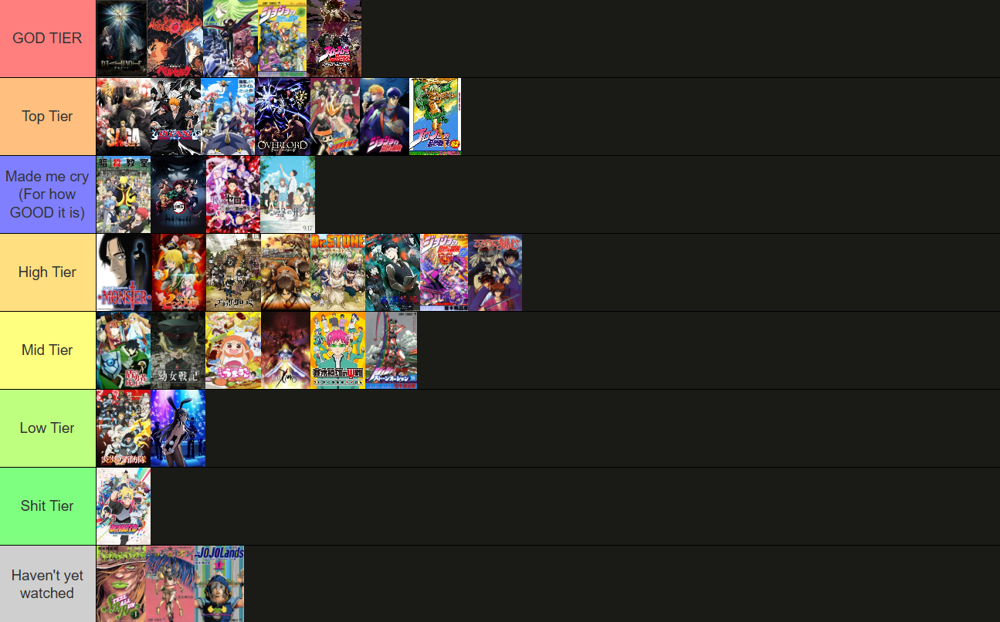

Anime Tierlist
I thought i'd be a great idea to include my own rankings and opinion of some of the many animes ive every watched. :>
🗓️ 05 Feb 2026 | ⏱️~4 minute read

And finally, the “Haven’t Yet Watched” tier. These are still on my radar, and I’m keeping an open
mind. Who knows some of these could end up GOD TIER once the author (Araki) makes it animated
My personal ranking of every anime I’ve watched (purely subjective).
The Explanations and Reasonings
Here’s the deal Death Note being in GOD TIER absolutely deserves its place. The story flow is insanely tight, the mind games are on another level, and every plot twist feels intentional instead of forced. Light vs L is still one of the most iconic rivalries in anime history, and the atmosphere alone carries the show into legendary status.
Berserk also earns its GOD TIER spot without question. The themes, the brutality, the tragedy it’s dark in a way that actually means something. It’s not edgy for the sake of being edgy; it’s raw, uncomfortable, and unforgettable.
And Code Geass… oh my days. This show is a masterpiece, especially the ending. The build-up, the sacrifices, the absolute mind-blowing conclusion I was genuinely freaking out watching it. Lelouch’s character arc is one of the best-written in anime, period.
Now JoJo’s Parts 3 and 4 easily the best of what I’ve watched so far. These two stand head and shoulders above the rest for me. The Stand battles, the creativity, the characters, the sheer personality of these parts it’s peak JoJo. If I went deeper into why, it would take A LOT of words, so just know this placement was not accidental.
Moving into TOP TIER these shows are insanely good and just barely miss GOD TIER. They have incredible world-building, strong casts, and moments that genuinely stick with you. Some of them may not hit the same legendary highs as GOD TIER, but they are consistently amazing and highly memorable.
The “Made Me Cry (For how GOOD it is)” tier speaks for itself. These anime didn’t just entertain me they emotionally destroyed me in the best way possible. Whether it was the character journeys, the themes of loss and growth, or the beautiful execution, these shows hit deep and stayed there.
HIGH TIER is stacked with really strong anime. Great pacing, solid storytelling, and characters that are easy to get invested in. Some minor flaws or missed opportunities keep them from being higher, but they’re still shows I’d easily recommend without hesitation.
MID TIER doesn’t mean bad not even close. These anime are enjoyable, have good moments, and are worth watching, but they either didn’t fully click with me or didn’t leave a lasting impact. Still fun, still solid, just not unforgettable.
LOW TIER is where the cracks really start to show. Whether it’s pacing issues, weak writing, or wasted potential, these shows didn’t live up to what they could’ve been. Not terrible, but definitely disappointing.
SHIT TIER… yeah. These are the ones that genuinely annoyed me, bored me, or felt like a waste of time. Poor execution, messy storytelling, or just not my vibe at all. No hate if you like them ,they just weren’t it for me.
And finally, the “Haven’t Yet Watched” tier. These are still on my radar, and I’m keeping an open
mind. Who knows some of these could end up GOD TIER once the author (Araki) makes it animated (I'd probably be married and had kids by the time it gets animated, but oh well)
📅 05 February 2026